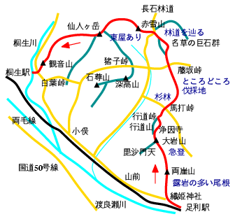

足利〜仙人ヶ岳〜桐生
天気：☀
メンバー：T
行程：織姫神社 9:00 …両崖山(251m) 9:30 …大岩山(417m) 10:15 …浄因寺駐車場 11:00 …馬打峠 11:20 …藤坂峠 12:15 …湯ノ沢分岐 12:40 …巨石群入口 13:00 …長石林道 13:30 …赤雪山(621m) 14:00 …仙人ヶ岳(663m) 15:20 …観音山 17:10 …自宅 17:30

織姫神社や行道山、赤雪山、仙人ヶ岳など、普通は別々に歩かれるコースを繫いで、足利から桐生まで稜線伝いに歩いてきた。
JR足利駅からスタート。織姫神社の参道の階段を上がると古墳やレストランのある公園になっている。両崖山へは眺めの良い露岩の尾根。歩く人も多い。両崖山の山頂はタブノキに囲まれている。
一度鞍部に下り、登り返すと大岩山。石尊山展望台を過ぎ、一旦、尾根を離れて浄因寺に下る。この寺は奥山の雰囲気が漂う。浄因寺から車道を下り、分岐を左に折れて林道を登る。行道峠までは上がらず、途中の道標に従って右へ入る。
しばらくは平凡な尾根歩きが続く。馬打峠と藤坂峠の間は杉林で、ところどころ伐採地。藤坂峠の先で左に湯ノ沢への道を分け、再び尾根を離れて右へ下り、名草の巨石群へ。ここから赤雪山を目指すハイカーは多いようだ。巨石群の奥からしばらく林道を歩く。
長石林道を横切って、いよいよ赤雪山への山らしい道となる。赤雪山山頂には東屋があり、松田川ダムから上がってくる道もあって整備が行き届いている。仙人ヶ岳への稜線の眺めが良い。ここから仙人ヶ岳への稜線はなかなかアップダウンが多くてハード。仙人ヶ岳の頂稜の一角にひょっこりでる。1日で歩けるか不安だったが、ここまでくれば大丈夫。余裕の時刻での到着だ。
仙人ヶ岳から観音山への稜線歩きは長いが、暗くなる前に自宅へ下山。およそ30kmのコースを歩き通して、久しぶりに筋肉痛になった山行でした。